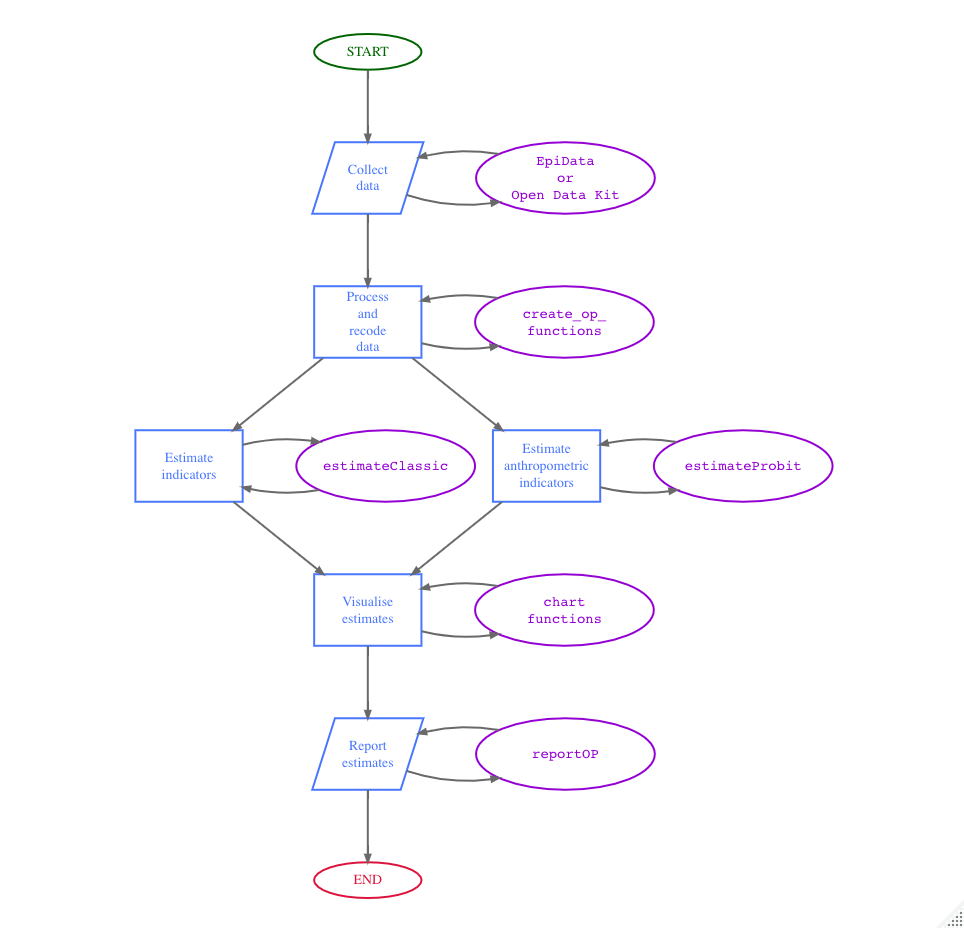
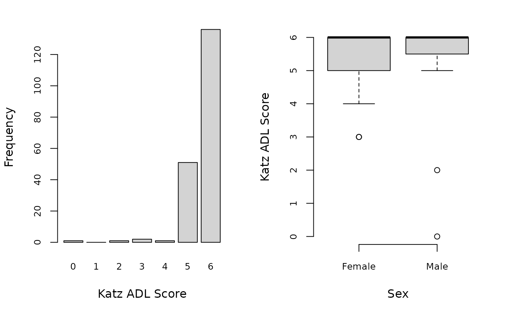

The RAM-OP Workflow is summarised in the diagram below.

The oldr package provides functions to use for all steps
after data collection. These functions were developed specifically for
the data structure created by the EpiData
or the Open Data
Kit collection tools. The data structure produced by these
collection tools is shown by the dataset testSVY included
in the oldr package.
testSVY
#> # A tibble: 192 × 90
#> ad2 psu hh id d1 d2 d3 d4 d5 f1 f2a f2b f2c
#> <int> <int> <int> <int> <int> <int> <int> <int> <int> <int> <int> <int> <int>
#> 1 1 201 1 1 1 67 2 5 2 3 2 1 1
#> 2 1 201 2 1 1 74 1 2 2 3 2 1 1
#> 3 1 201 3 1 1 60 1 2 2 2 2 2 2
#> 4 1 201 3 2 1 60 2 2 2 3 2 2 1
#> 5 1 201 4 1 1 85 2 5 2 3 2 1 1
#> 6 1 201 5 1 2 86 1 5 1 4 2 1 1
#> 7 1 201 6 1 1 80 1 5 2 3 2 1 1
#> 8 1 201 6 2 1 60 2 5 2 3 2 2 1
#> 9 1 201 7 1 1 62 1 2 2 2 2 1 1
#> 10 1 201 8 1 1 72 2 5 2 2 2 1 1
#> # … with 182 more rows, and 77 more variables: f2d <int>, f2e <int>, f2f <int>,
#> # f2g <int>, f2h <int>, f2i <int>, f2j <int>, f2k <int>, f2l <int>,
#> # f2m <int>, f2n <int>, f2o <int>, f2p <int>, f2q <int>, f2r <int>,
#> # f2s <int>, f3 <int>, f4 <int>, f5 <int>, f6 <int>, f7 <int>, a1 <int>,
#> # a2 <int>, a3 <int>, a4 <int>, a5 <int>, a6 <int>, a7 <int>, a8 <int>,
#> # k6a <int>, k6b <int>, k6c <int>, k6d <int>, k6e <int>, k6f <int>,
#> # ds1 <int>, ds2 <int>, ds3 <int>, ds4 <int>, ds5 <int>, ds6a <int>, …Processing and recoding data
Once RAM-OP data is collected, it will need to be processed and
recoded based on the definitions of the various indicators included in
RAM-OP. The oldr package provides a suite functions to
perform this processing and recoding. These functions and their syntax
can be easily remembered as the create_op_ functions as
their function names start with the create_ verb followed
by the op_ label and then followed by an indicator or
indicator set specific identifier or short name. Finally, an additional
tag for male or female can be added to the
main function to provide gender-specific outputs.
Currently, a standard RAM-OP can provide results for the 13 indicators or indicator sets for older people. The following table shows these indicators/indicator sets alongside the functions related to them:
| Indicator / Indicator Set | Related Functions |
|---|---|
| Demography and situation |
create_op_demo;
create_op_demo_males;
create_op_demo_females
|
| Food intake |
create_op_food;
create_op_food_males;
create_op_food_females
|
| Severe food insecurity |
create_op_hunger;
create_op_hunger_males;
create_op_hunger_females
|
| Disability |
create_op_disability;
create_op_disability_males;
create_op_disability_females
|
| Activities of daily living |
create_op_adl;
create_op_adl_males;
create_op_adl_females
|
| Mental health and well-being |
create_op_mental;
create_op_mental_males;
create_op_mental_females
|
| Dementia |
create_op_dementia;
create_op_dementia_males;
create_op_dementia_females
|
| Health and health-seeking behaviour |
create_op_health;
create_op_health_males;
create_op_health_females
|
| Sources of income |
create_op_income;
create_op_income_males;
create_op_income_females
|
| Water, sanitation, and hygiene |
create_op_wash;
create_op_wash_males;
create_op_wash_females
|
| Anthropometry and anthropometric screening coverage |
create_op_anthro;
create_op_anthro_males;
create_op_anthro_females
|
| Visual impairment |
create_op_visual;
create_op_visual_males;
create_op_visual_females
|
| Miscellaneous |
create_op_misc;
create_op_misc_males;
create_op_misc_females
|
A final function in the processing and recoding set -
create_op_all - is provided to perform the processing and
recoding of all indicators or indicator sets. This function allows for
the specification of which indicators or indicator sets to process and
recode which is useful for cases where not all the indicators or
indicator sets have been collected or if only specific indicators or
indicator sets need to be analysed or reported. This function also
specifies whether a specific gender subset of the data is needed.
For a standard RAM-OP implementation, this step is performed in R as follows:
## Process and recode all standard RAM-OP indicators in the testSVY dataset
create_op_all(svy = testSVY)which results in the following output:
#> # A tibble: 192 × 138
#> psu sex1 sex2 resp1 resp2 resp3 resp4 age ageGrp1 ageGrp2 ageGrp3
#> <int> <dbl> <dbl> <dbl> <dbl> <dbl> <dbl> <int> <dbl> <dbl> <dbl>
#> 1 201 0 1 1 0 0 0 67 0 1 0
#> 2 201 1 0 1 0 0 0 74 0 0 1
#> 3 201 1 0 1 0 0 0 60 0 1 0
#> 4 201 0 1 1 0 0 0 60 0 1 0
#> 5 201 0 1 1 0 0 0 85 0 0 0
#> 6 201 1 0 0 1 0 0 86 0 0 0
#> 7 201 1 0 1 0 0 0 80 0 0 0
#> 8 201 0 1 1 0 0 0 60 0 1 0
#> 9 201 1 0 1 0 0 0 62 0 1 0
#> 10 201 0 1 1 0 0 0 72 0 0 1
#> # … with 182 more rows, and 127 more variables: ageGrp4 <dbl>, ageGrp5 <dbl>,
#> # marital1 <dbl>, marital2 <dbl>, marital3 <dbl>, marital4 <dbl>,
#> # marital5 <dbl>, marital6 <dbl>, alone <dbl>, MF <dbl>, DDS <dbl>,
#> # FG01 <dbl>, FG02 <dbl>, FG03 <dbl>, FG04 <dbl>, FG05 <dbl>, FG06 <dbl>,
#> # FG07 <dbl>, FG08 <dbl>, FG09 <dbl>, FG10 <dbl>, FG11 <dbl>,
#> # proteinRich <dbl>, pProtein <dbl>, aProtein <dbl>, pVitA <dbl>,
#> # aVitA <dbl>, xVitA <dbl>, ironRich <dbl>, caRich <dbl>, znRich <dbl>, …Estimating indicators
Once data has been processed and appropriate recoding for indicators has been performed, indicator estimates can now be calculated.
It is important to note that estimation procedures need to account for the sample design. All major statistical analysis software can do this (details vary). There are two things to note:
The RAM-OP sample is a two-stage sample. Subjects are sampled from a small number of primary sampling units (PSUs).
The RAM-OP sample is not prior weighted. This means that per-PSU sampling weights are needed. These are usually the populations of the PSU.
This sample design will need to be specified to statistical analysis software being used. If no weights are provided, then the analysis may produce estimates that place undue weight to observations from smaller communities with confidence intervals with lower than nominal coverage (i.e. they will be too narrow).
Blocked weighted bootstrap
The oldr package uses blocked weighted
bootstrap estimation approach:
Blocked : The block corresponds to the PSU or cluster.
Weighted : The RAM-OP sampling procedure does not use population proportional sampling to weight the sample prior to data collection as is done with SMART type surveys. This means that a posterior weighting procedure is required. The standard RAM-OP software uses a “roulette wheel” algorithm to weight (i.e. by population) the selection probability of PSUs in bootstrap replicates.
A total of m PSUs are sampled with-replacement from the
survey dataset where m is the number of PSUs in the survey
sample. Individual records within each PSU are then sampled
with-replacement. A total of n records are sampled
with-replacement from each of the selected PSUs where n is
the number of individual records in a selected PSU. The resulting
collection of records replicates the original survey in terms of both
sample design and sample size. A large number of replicate surveys are
taken (the standard RAM-OP software uses \(r =
399\) replicate surveys but this can be changed). The required
statistic (e.g. the mean of an indicator value) is applied to each
replicate survey. The reported estimate consists of the 50th (point
estimate), 2.5th (lower 95% confidence limit), and the 97.5th (upper 95%
confidence limit) percentiles of the distribution of the statistic
observed across all replicate surveys. The blocked weighted bootstrap
procedure is outlined in the figure below.

The principal advantages of using a bootstrap estimator are:
Bootstrap estimators work well with small sample sizes.
The method is non-parametric and uses empirical rather than theoretical distributions. There are no assumptions of things like normality to worry about.
The method allows estimation of the sampling distribution of almost any statistic using only simple computational methods.
PROBIT estimator
The prevalence of GAM, MAM, and SAM are estimated using a PROBIT estimator. This type of estimator provides better precision than a classic estimator at small sample sizes as discussed in the following literature:
World Health Organisation, Physical Status: The use and interpretation of anthropometry. Report of a WHO expert committee, WHO Technical Report Series 854, WHO, Geneva, 1995
Dale NM, Myatt M, Prudhon C, Briend, A, “Assessment of the PROBIT approach for estimating the prevalence of global, moderate and severe acute malnutrition from population surveys”, Public Health Nutrition, 1–6. https://doi.org/10.1017/s1368980012003345, 2012
Blanton CJ, Bilukha, OO, “The PROBIT approach in estimating the prevalence of wasting: revisiting bias and precision”, Emerging Themes in Epidemiology, 10(1), 2013, p. 8
An estimate of GAM prevalence can be made using a classic estimator:
\[ \text{prevalence} ~ = ~ \frac{\text{Number of respondents with MUAC < 210}}{\text{Total number of respondents}} \] On the other hand, the estimate of GAM prevalence made from the RAM-OP survey data is made using a PROBIT estimator. The PROBIT function is also known as the inverse cumulative distribution function. This function converts parameters of the distribution of an indicator (e.g. the mean and standard deviation of a normally distributed variable) into cumulative percentiles. This means that it is possible to use the normal PROBIT function with estimates of the mean and standard deviation of indicator values in a survey sample to predict (or estimate) the proportion of the population falling below a given threshold. For example, for data with a mean MUAC of 256 mm and a standard deviation of 28 mm the output of the normal PROBIT function for a threshold of 210 mm is 0.0502 meaning that 5.02% of the population are predicted (or estimated) to fall below the 210 mm threshold.
Both the classic and the PROBIT methods can be thought of as estimating area:

The principal advantage of the PROBIT approach is that the required sample size is usually smaller than that required to estimate prevalence with a given precision using the classic method.
The PROBIT method assumes that MUAC is a normally distributed variable. If this is not the case then the distribution of MUAC is transformed towards normality.
The prevalence of SAM is estimated in a similar way to GAM. The prevalence of MAM is estimated as the difference between the GAM and SAM prevalence estimates:
\[ \widehat{\text{GAM prevalence}} ~ = ~ \widehat{\text{GAM prevalence}} - \widehat{\text{SAM prevalence}} \]
Classic estimator
The function estimateClassic in oldr
implements the blocked weighted bootstrap classic estimator of RAM-OP.
This function uses the bootClassic statistic to estimate
indicator values.
The estimateClassic function is used for all the
standard RAM-OP indicators except for anthropometry. The function is
used as follows:
## Process and recode RAM-OP data (testSVY)
df <- create_op_all(svy = testSVY)
## Perform classic estimation on recoded data using appropriate weights provided by testPSU
classicDF <- estimate_classic(x = df, w = testPSU)This results in (using limited replicates to reduce computing time):
#> # A tibble: 136 × 10
#> INDICATOR EST.ALL LCL.ALL UCL.ALL EST.MALES LCL.MA…¹ UCL.M…² EST.F…³ LCL.F…⁴
#> <chr> <dbl> <dbl> <dbl> <dbl> <dbl> <dbl> <dbl> <dbl>
#> 1 resp1 0.854 0.803 0.901 0.845 0.764 0.925 0.842 7.70e-1
#> 2 resp2 0.0990 0.0635 0.152 0.0952 0.0339 0.141 0.114 6.55e-2
#> 3 resp3 0.0365 0.0167 0.0708 0.05 0.0201 0.102 0.0508 2.56e-2
#> 4 resp4 0.00521 0 0.0302 0.0119 0 0.0485 0 0
#> 5 age 70.8 68.8 73.2 71 69.8 73.5 70.7 6.90e+1
#> 6 ageGrp1 0 0 0 0 0 0 0 0
#> 7 ageGrp2 0.552 0.446 0.663 0.475 0.280 0.604 0.565 4.58e-1
#> 8 ageGrp3 0.219 0.169 0.278 0.279 0.209 0.435 0.188 1.50e-1
#> 9 ageGrp4 0.151 0.123 0.271 0.195 0.0960 0.254 0.168 1.43e-1
#> 10 ageGrp5 0.0417 0.0167 0.0948 0.0610 0.0279 0.0909 0.0435 1.71e-3
#> # … with 126 more rows, 1 more variable: UCL.FEMALES <dbl>, and abbreviated
#> # variable names ¹LCL.MALES, ²UCL.MALES, ³EST.FEMALES, ⁴LCL.FEMALESPROBIT estimator
The function estimateProbit in oldr
implements the blocked weighted bootstrap PROBIT estimator of RAM-OP.
This function uses the probit_GAM and the
probit_SAM statistic to estimate indicator values.
The estimateProbit function is used for only the
anthropometric indicators. The function is used as follows:
## Process and recode RAM-OP data (testSVY)
df <- create_op_all(svy = testSVY)
## Perform probit estimation on recoded data using appropriate weights provided by testPSU
probitDF <- estimate_probit(x = df, w = testPSU)This results in (using limited replicates to reduce computing time):
#> # A tibble: 3 × 10
#> INDICATOR EST.ALL LCL.ALL UCL.ALL EST.MA…¹ LCL.MA…² UCL.M…³ EST.F…⁴ LCL.F…⁵
#> <chr> <dbl> <dbl> <dbl> <dbl> <dbl> <dbl> <dbl> <dbl>
#> 1 GAM 0.0262 0.0105 0.0377 1.05e- 2 2.46e- 3 1.99e-2 3.73e-2 6.57e-3
#> 2 MAM 0.0247 0.0101 0.0370 1.05e- 2 2.44e- 3 1.99e-2 3.47e-2 6.20e-3
#> 3 SAM 0.000385 0.0000232 0.00201 8.41e-11 1.78e-16 6.96e-5 9.17e-4 1.62e-5
#> # … with 1 more variable: UCL.FEMALES <dbl>, and abbreviated variable names
#> # ¹EST.MALES, ²LCL.MALES, ³UCL.MALES, ⁴EST.FEMALES, ⁵LCL.FEMALESThe two sets of estimates are then merged using the
mergeEstimates function as follows:
## Merge classicDF and probitDF
resultsDF <- merge_estimates(x = classicDF, y = probitDF)
resultsDFwhich results in:
#> # A tibble: 139 × 13
#> INDICATOR GROUP LABEL TYPE EST.ALL LCL.ALL UCL.ALL EST.M…¹ LCL.M…² UCL.M…³
#> <fct> <fct> <fct> <fct> <dbl> <dbl> <dbl> <dbl> <dbl> <dbl>
#> 1 resp1 Survey Resp… Prop… 8.54e-1 0.803 0.901 0.845 0.764 0.925
#> 2 resp2 Survey Resp… Prop… 9.90e-2 0.0635 0.152 0.0952 0.0339 0.141
#> 3 resp3 Survey Resp… Prop… 3.65e-2 0.0167 0.0708 0.05 0.0201 0.102
#> 4 resp4 Survey Resp… Prop… 5.21e-3 0 0.0302 0.0119 0 0.0485
#> 5 age Demogr… Mean… Mean 7.08e+1 68.8 73.2 71 69.8 73.5
#> 6 ageGrp1 Demogr… Self… Prop… 0 0 0 0 0 0
#> 7 ageGrp2 Demogr… Self… Prop… 5.52e-1 0.446 0.663 0.475 0.280 0.604
#> 8 ageGrp3 Demogr… Self… Prop… 2.19e-1 0.169 0.278 0.279 0.209 0.435
#> 9 ageGrp4 Demogr… Self… Prop… 1.51e-1 0.123 0.271 0.195 0.0960 0.254
#> 10 ageGrp5 Demogr… Self… Prop… 4.17e-2 0.0167 0.0948 0.0610 0.0279 0.0909
#> # … with 129 more rows, 3 more variables: EST.FEMALES <dbl>, LCL.FEMALES <dbl>,
#> # UCL.FEMALES <dbl>, and abbreviated variable names ¹EST.MALES, ²LCL.MALES,
#> # ³UCL.MALESCreating charts
Once indicators has been estimated, the outputs can then be used to
create relevant charts to visualise the results. A set of functions that
start with the verb chart_ is provided followed by the
indicator identifier to specify the type of indicator to visualise. The
output of the function is a PNG file saved in the specified filename
appended to the indicator identifier within the current working
directory or saved in the specified filename appended to the indicator
identifier in the specified directory path.
The following shows how to produce the chart for ADLs saved with filename test appended at the start inside a temporary directory:
chart_adl(x = create_op_all(testSVY),
filename = paste(tempdir(), "test", sep = "/"))
#> agg_png
#> 2The resulting PNG file can be found in the temporary directory
list.files(path = tempdir())
#> [1] "filed30941c8c6874" "filed30941d37e573"
#> [3] "filed30942358f68" "filed3094236fd7a6"
#> [5] "filed309423b53055" "filed30942735963a"
#> [7] "filed30942f0a98f5" "filed3094323a913a"
#> [9] "filed30943d8097f1" "filed309446c567"
#> [11] "filed30944ea57d50" "filed3094547e3939"
#> [13] "filed30945add5bc9" "filed3094644e2fe5"
#> [15] "filed309479f0477a" "filed30947d22043e"
#> [17] "rmarkdown-strd309461b4996c.html" "test.ADL.png"and will look something like this:

Reporting estimates
Finally, estimates can be reported through report tables. The
report_op_table function facilitates this through the
following syntax:
report_op_table(estimates = resultsDF,
filename = paste(tempdir(), "TEST", sep = "/"))The resulting CSV file is found in the temporary directory
list.files(path = tempdir())
#> [1] "filed30941c612c2c" "filed30941c8c6874"
#> [3] "filed30941d37e573" "filed30942358f68"
#> [5] "filed3094236fd7a6" "filed309423b53055"
#> [7] "filed30942735963a" "filed30942f0a98f5"
#> [9] "filed3094323a913a" "filed30943abf2760"
#> [11] "filed30943d8097f1" "filed309446c567"
#> [13] "filed30944ea57d50" "filed3094547e3939"
#> [15] "filed30945add5bc9" "filed3094644e2fe5"
#> [17] "filed309472ee4831" "filed309479f0477a"
#> [19] "filed30947d22043e" "rmarkdown-strd309461b4996c.html"
#> [21] "test.ADL.png" "TEST.report.csv"and will look something like this:
#> X X.1 X.2 X.3 X.4 X.5 X.6
#> 1 Survey
#> 2 ALL MALES
#> 3 INDICATOR TYPE EST LCL UCL EST LCL
#> 4 99 2 0.8542 0.8031 0.9010 0.8452 0.7641
#> 5 96 2 0.0990 0.0635 0.1521 0.0952 0.0339
#> 6 98 2 0.0365 0.0167 0.0708 0.0500 0.0201
#> 7 97 2 0.0052 0.0000 0.0302 0.0119 0.0000
#> 8
#> 9 Demography and situation
#> 10 ALL MALES
#> 11 INDICATOR TYPE EST LCL UCL EST LCL
#> 12 54 1 70.8021 68.8031 73.1781 71.0000 69.8452
#> 13 106 2 0.0000 0.0000 0.0000 0.0000 0.0000
#> 14 107 2 0.5521 0.4458 0.6625 0.4750 0.2798
#> 15 108 2 0.2188 0.1688 0.2781 0.2791 0.2093
#> 16 109 2 0.1510 0.1229 0.2708 0.1948 0.0960
#> 17 105 2 0.0417 0.0167 0.0948 0.0610 0.0279
#> 18 115 2 0.3958 0.3135 0.4885 1.0000 1.0000
#> 19 114 2 0.6042 0.5115 0.6865 0.0000 0.0000
#> 20 51 2 0.0260 0.0104 0.0635 0.0238 0.0000
#> 21 49 2 0.3281 0.2198 0.3792 0.5625 0.4829
#> 22 48 2 0.1094 0.0833 0.1479 0.1220 0.0727
#> 23 47 2 0.0625 0.0344 0.1229 0.1200 0.0376
#> 24 52 2 0.4583 0.3865 0.5333 0.2000 0.1439
#> 25 50 2 0.0000 0.0000 0.0000 0.0000 0.0000
#> 26 127 2 0.1302 0.0833 0.1583 0.1385 0.1173
#> 27
#> 28 Diet
#> 29 ALL MALES
#> 30 INDICATOR TYPE EST LCL UCL EST LCL
#> 31 53 1 2.5000 2.3281 2.6510 2.5581 2.2697
#> 32 25 1 4.6146 4.4115 4.6823 4.5294 4.2621
#> 33 14 2 0.9167 0.9010 0.9417 0.9286 0.8336
#> 34 23 2 0.5156 0.4917 0.5563 0.4524 0.3880
#> 35 18 2 0.6042 0.5177 0.6583 0.5529 0.4816
#> 36 20 2 0.0677 0.0469 0.0729 0.0349 0.0024
#> 37 15 2 0.0208 0.0104 0.0365 0.0581 0.0155
#> 38 17 2 0.3542 0.2885 0.4365 0.4588 0.3852
#> 39 19 2 0.4115 0.3365 0.4698 0.3867 0.2960
#> 40 21 2 0.0260 0.0104 0.0521 0.0000 0.0000
#> 41 16 2 0.2240 0.1740 0.2448 0.2338 0.1173
#> 42 24 2 0.4740 0.4323 0.5771 0.4156 0.3223
#> 43 22 2 0.9635 0.9479 0.9729 0.9884 0.9629
#> 44
#> 45 Nutrients
#> 46 ALL MALES
#> 47 INDICATOR TYPE EST LCL UCL EST LCL
#> 48 88 2 0.4844 0.4073 0.5458 0.4235 0.3653
#> 49 89 2 0.4115 0.3365 0.4698 0.3867 0.2960
#> 50 87 2 0.1146 0.0771 0.1510 0.0909 0.0180
#> 51 83 2 0.6354 0.5771 0.6865 0.5867 0.5401
#> 52 2 2 0.0469 0.0281 0.0875 0.0581 0.0155
#> 53 3 2 0.6615 0.5854 0.7104 0.6071 0.5727
#> 54 42 2 0.6979 0.6458 0.7344 0.6463 0.5938
#> 55 9 2 0.0260 0.0104 0.0521 0.0000 0.0000
#> 56 140 2 0.6510 0.5646 0.6937 0.6860 0.6260
#> 57 135 2 0.6927 0.5938 0.7125 0.6860 0.6642
#> 58 137 2 0.8385 0.8115 0.8771 0.8095 0.7595
#> 59 138 2 0.6510 0.5646 0.6937 0.6860 0.6260
#> 60 139 2 0.8854 0.8656 0.9177 0.9091 0.8697
#> 61 136 2 0.4271 0.3490 0.4781 0.5059 0.4321
#> 62 134 2 0.4062 0.3396 0.4771 0.4935 0.4262
#> 63
#> 64 Food Security
#> 65 ALL MALES
#> 66 INDICATOR TYPE EST LCL UCL EST LCL
#> 67 45 2 0.7656 0.7229 0.8469 0.7442 0.6935
#> 68 60 2 0.1719 0.1135 0.2281 0.1882 0.1006
#> 69 113 2 0.0260 0.0115 0.0417 0.0400 0.0120
#> 70
#> 71 Disability (WG)
#> 72 ALL MALES
#> 73 INDICATOR TYPE EST LCL UCL EST LCL
#> 74 129 2 1.0000 1.0000 1.0000 1.0000 1.0000
#> 75 130 2 0.0000 0.0000 0.0000 0.0000 0.0000
#> 76 131 2 0.0000 0.0000 0.0000 0.0000 0.0000
#> 77 132 2 0.0000 0.0000 0.0000 0.0000 0.0000
#> 78 28 2 1.0000 1.0000 1.0000 1.0000 1.0000
#> 79 29 2 0.0000 0.0000 0.0000 0.0000 0.0000
#> 80 30 2 0.0000 0.0000 0.0000 0.0000 0.0000
#> 81 31 2 0.0000 0.0000 0.0000 0.0000 0.0000
#> 82 55 2 1.0000 1.0000 1.0000 1.0000 1.0000
#> 83 56 2 0.0000 0.0000 0.0000 0.0000 0.0000
#> 84 57 2 0.0000 0.0000 0.0000 0.0000 0.0000
#> 85 58 2 0.0000 0.0000 0.0000 0.0000 0.0000
#> 86 92 2 1.0000 1.0000 1.0000 1.0000 1.0000
#> 87 93 2 0.0000 0.0000 0.0000 0.0000 0.0000
#> 88 94 2 0.0000 0.0000 0.0000 0.0000 0.0000
#> 89 95 2 0.0000 0.0000 0.0000 0.0000 0.0000
#> 90 101 2 1.0000 1.0000 1.0000 1.0000 1.0000
#> 91 102 2 0.0000 0.0000 0.0000 0.0000 0.0000
#> 92 103 2 0.0000 0.0000 0.0000 0.0000 0.0000
#> 93 104 2 0.0000 0.0000 0.0000 0.0000 0.0000
#> 94 10 2 1.0000 1.0000 1.0000 1.0000 1.0000
#> 95 11 2 0.0000 0.0000 0.0000 0.0000 0.0000
#> 96 12 2 0.0000 0.0000 0.0000 0.0000 0.0000
#> 97 13 2 0.0000 0.0000 0.0000 0.0000 0.0000
#> 98 63 2 1.0000 1.0000 1.0000 1.0000 1.0000
#> 99 5 2 0.0000 0.0000 0.0000 0.0000 0.0000
#> 100 6 2 0.0000 0.0000 0.0000 0.0000 0.0000
#> 101 7 2 0.0000 0.0000 0.0000 0.0000 0.0000
#> 102 62 2 0.0000 0.0000 0.0000 0.0000 0.0000
#> 103
#> 104 Activities of daily living
#> 105 ALL MALES
#> 106 INDICATOR TYPE EST LCL UCL EST LCL
#> 107 35 2 0.9688 0.9542 0.9885 0.9634 0.9029
#> 108 37 2 0.9896 0.9635 0.9990 0.9647 0.9046
#> 109 39 2 0.9896 0.9635 0.9990 0.9647 0.9046
#> 110 40 2 0.9688 0.9479 0.9833 0.9647 0.8931
#> 111 36 2 0.7500 0.6000 0.8073 0.7538 0.7040
#> 112 38 2 0.9948 0.9896 1.0000 0.9881 0.9077
#> 113 44 1 5.6302 5.5292 5.7177 5.6163 5.2597
#> 114 41 2 0.9792 0.9594 0.9938 0.9647 0.9046
#> 115 82 2 0.0104 0.0021 0.0333 0.0000 0.0000
#> 116 112 2 0.0104 0.0000 0.0250 0.0353 0.0000
#> 117 126 2 0.5885 0.5260 0.6323 0.5833 0.4127
#> 118 125 2 0.1042 0.0500 0.1656 0.1558 0.1227
#> 119
#> 120 Mental health
#> 121 ALL MALES
#> 122 INDICATOR TYPE EST LCL UCL EST LCL
#> 123 43 1 12.1406 11.2198 12.5240 11.4146 8.9818
#> 124 110 2 0.4896 0.4062 0.5344 0.4308 0.2856
#> 125 85 2 0.2083 0.1510 0.2490 0.1600 0.0865
#> 126
#> 127 Health
#> 128 ALL MALES
#> 129 INDICATOR TYPE EST LCL UCL EST LCL
#> 130 46 2 0.4323 0.3896 0.4750 0.4156 0.3285
#> 131 128 2 0.7717 0.6137 0.8508 0.6786 0.4908
#> 132 74 2 0.0625 0.0000 0.4364 0.1250 0.0000
#> 133 79 2 0.4706 0.2061 0.7976 0.2727 0.1333
#> 134 80 2 0.1364 0.0118 0.4256 0.0000 0.0000
#> 135 81 2 0.0588 0.0459 0.2480 0.4545 0.0222
#> 136 73 2 0.0000 0.0000 0.0000 0.0000 0.0000
#> 137 77 2 0.0000 0.0000 0.0000 0.0000 0.0000
#> 138 75 2 0.0000 0.0000 0.0381 0.0000 0.0000
#> 139 78 2 0.0000 0.0000 0.0000 0.0000 0.0000
#> 140 76 2 0.0645 0.0000 0.2653 0.1111 0.0000
#> 141 91 2 0.8698 0.8115 0.9219 0.8500 0.8324
#> 142 1 2 0.8247 0.7435 0.8669 0.7538 0.6785
#> 143 65 2 0.0714 0.0000 0.2715 0.0000 0.0000
#> 144 70 2 0.8519 0.6223 0.9956 0.8500 0.5091
#> 145 71 2 0.0000 0.0000 0.0000 0.0000 0.0000
#> 146 72 2 0.0000 0.0000 0.0738 0.0952 0.0000
#> 147 64 2 0.0000 0.0000 0.0000 0.0000 0.0000
#> 148 68 2 0.0000 0.0000 0.0978 0.0000 0.0000
#> 149 66 2 0.0000 0.0000 0.0000 0.0000 0.0000
#> 150 69 2 0.0000 0.0000 0.0632 0.0000 0.0000
#> 151 67 2 0.0000 0.0000 0.0000 0.0000 0.0000
#> 152 8 2 0.0260 0.0062 0.0510 0.0154 0.0024
#> 153 133 2 0.3906 0.3604 0.4302 0.5077 0.3998
#> 154 86 2 0.3177 0.2521 0.4021 0.2353 0.2029
#> 155
#> 156 Income
#> 157 ALL MALES
#> 158 INDICATOR TYPE EST LCL UCL EST LCL
#> 159 27 2 0.5521 0.5042 0.6385 0.6341 0.5522
#> 160 116 2 0.4115 0.2792 0.4740 0.4935 0.4102
#> 161 124 2 0.0990 0.0885 0.1865 0.1948 0.1447
#> 162 121 2 0.0312 0.0167 0.0417 0.0625 0.0278
#> 163 123 2 0.0833 0.0312 0.1135 0.0353 0.0025
#> 164 119 2 0.0052 0.0000 0.0156 0.0000 0.0000
#> 165 122 2 0.0104 0.0021 0.0156 0.0375 0.0000
#> 166 118 2 0.0156 0.0000 0.0292 0.0366 0.0031
#> 167 117 2 0.3542 0.2792 0.4094 0.3171 0.2031
#> 168 120 2 0.0208 0.0000 0.0354 0.0000 0.0000
#> 169
#> 170 WASH
#> 171 ALL MALES
#> 172 INDICATOR TYPE EST LCL UCL EST LCL
#> 173 34 2 0.6406 0.5771 0.6719 0.6047 0.4668
#> 174 100 2 0.7188 0.6583 0.7896 0.6512 0.5264
#> 175 33 2 0.2708 0.2031 0.2927 0.2907 0.1467
#> 176 32 2 0.2500 0.2031 0.2844 0.2907 0.1436
#> 177
#> 178 Relief
#> 179 ALL MALES
#> 180 INDICATOR TYPE EST LCL UCL EST LCL
#> 181 84 2 0.0365 0.0083 0.0646 0.0244 0.0000
#> 182 4 2 0.0417 0.0323 0.0677 0.0357 0.0000
#> 183 90 2 0.0260 0.0104 0.0531 0.0238 0.0124
#> 184
#> 185 Anthropometry
#> 186 ALL MALES
#> 187 INDICATOR TYPE EST LCL UCL EST LCL
#> 188 26 2 0.0262 0.0105 0.0377 0.0105 0.0025
#> 189 59 2 0.0247 0.0101 0.0370 0.0105 0.0024
#> 190 111 2 0.0004 0.0000 0.0020 0.0000 0.0000
#> X.7 X.8 X.9 X.10
#> 1
#> 2 FEMALES
#> 3 UCL EST LCL UCL
#> 4 0.9252 0.8421 0.7702 0.8785
#> 5 0.1411 0.1140 0.0655 0.1600
#> 6 0.1024 0.0508 0.0256 0.0595
#> 7 0.0485 0.0000 0.0000 0.0177
#> 8
#> 9
#> 10 FEMALES
#> 11 UCL EST LCL UCL
#> 12 73.5193 70.7000 68.9528 73.2824
#> 13 0.0000 0.0000 0.0000 0.0000
#> 14 0.6040 0.5652 0.4584 0.6258
#> 15 0.4354 0.1880 0.1504 0.3101
#> 16 0.2542 0.1682 0.1427 0.2523
#> 17 0.0909 0.0435 0.0017 0.1750
#> 18 1.0000 0.0000 0.0000 0.0000
#> 19 0.0000 1.0000 1.0000 1.0000
#> 20 0.0372 0.0413 0.0216 0.0758
#> 21 0.6078 0.1709 0.0618 0.2062
#> 22 0.1910 0.0661 0.0355 0.1077
#> 23 0.1737 0.0536 0.0290 0.0951
#> 24 0.2312 0.6496 0.6168 0.7619
#> 25 0.0000 0.0000 0.0000 0.0000
#> 26 0.2952 0.1000 0.0670 0.1523
#> 27
#> 28
#> 29 FEMALES
#> 30 UCL EST LCL UCL
#> 31 2.7692 2.6435 2.4140 2.8757
#> 32 4.6311 4.6491 4.3198 4.8490
#> 33 0.9524 0.8889 0.8398 0.9380
#> 34 0.5652 0.5785 0.4715 0.6363
#> 35 0.7403 0.5982 0.5558 0.7105
#> 36 0.0454 0.0625 0.0207 0.1301
#> 37 0.0877 0.0087 0.0017 0.0457
#> 38 0.5680 0.2810 0.2043 0.3549
#> 39 0.4957 0.4174 0.2829 0.5226
#> 40 0.0100 0.0424 0.0085 0.1021
#> 41 0.3004 0.2167 0.1339 0.2799
#> 42 0.4582 0.5868 0.4432 0.6246
#> 43 1.0000 0.9739 0.9207 0.9983
#> 44
#> 45
#> 46 FEMALES
#> 47 UCL EST LCL UCL
#> 48 0.5209 0.4957 0.3695 0.6075
#> 49 0.4957 0.4174 0.2829 0.5226
#> 50 0.1289 0.1391 0.0694 0.2087
#> 51 0.7240 0.6695 0.5967 0.7470
#> 52 0.0902 0.0609 0.0110 0.1106
#> 53 0.7287 0.6696 0.5986 0.7670
#> 54 0.8092 0.7167 0.6596 0.8012
#> 55 0.0100 0.0424 0.0085 0.1021
#> 56 0.7965 0.5750 0.5106 0.6515
#> 57 0.8036 0.6404 0.5632 0.6940
#> 58 0.9398 0.8596 0.8051 0.9652
#> 59 0.7965 0.5750 0.5106 0.6515
#> 60 0.9582 0.8833 0.8051 0.9652
#> 61 0.5758 0.3583 0.2729 0.4502
#> 62 0.5740 0.3248 0.2360 0.4195
#> 63
#> 64
#> 65 FEMALES
#> 66 UCL EST LCL UCL
#> 67 0.8533 0.7913 0.6626 0.8074
#> 68 0.2762 0.1538 0.1105 0.2442
#> 69 0.1164 0.0167 0.0000 0.0768
#> 70
#> 71
#> 72 FEMALES
#> 73 UCL EST LCL UCL
#> 74 1.0000 1.0000 1.0000 1.0000
#> 75 0.0000 0.0000 0.0000 0.0000
#> 76 0.0000 0.0000 0.0000 0.0000
#> 77 0.0000 0.0000 0.0000 0.0000
#> 78 1.0000 1.0000 1.0000 1.0000
#> 79 0.0000 0.0000 0.0000 0.0000
#> 80 0.0000 0.0000 0.0000 0.0000
#> 81 0.0000 0.0000 0.0000 0.0000
#> 82 1.0000 1.0000 1.0000 1.0000
#> 83 0.0000 0.0000 0.0000 0.0000
#> 84 0.0000 0.0000 0.0000 0.0000
#> 85 0.0000 0.0000 0.0000 0.0000
#> 86 1.0000 1.0000 1.0000 1.0000
#> 87 0.0000 0.0000 0.0000 0.0000
#> 88 0.0000 0.0000 0.0000 0.0000
#> 89 0.0000 0.0000 0.0000 0.0000
#> 90 1.0000 1.0000 1.0000 1.0000
#> 91 0.0000 0.0000 0.0000 0.0000
#> 92 0.0000 0.0000 0.0000 0.0000
#> 93 0.0000 0.0000 0.0000 0.0000
#> 94 1.0000 1.0000 1.0000 1.0000
#> 95 0.0000 0.0000 0.0000 0.0000
#> 96 0.0000 0.0000 0.0000 0.0000
#> 97 0.0000 0.0000 0.0000 0.0000
#> 98 1.0000 1.0000 1.0000 1.0000
#> 99 0.0000 0.0000 0.0000 0.0000
#> 100 0.0000 0.0000 0.0000 0.0000
#> 101 0.0000 0.0000 0.0000 0.0000
#> 102 0.0000 0.0000 0.0000 0.0000
#> 103
#> 104
#> 105 FEMALES
#> 106 UCL EST LCL UCL
#> 107 0.9846 0.9739 0.9381 1.0000
#> 108 1.0000 1.0000 0.9673 1.0000
#> 109 1.0000 1.0000 0.9673 1.0000
#> 110 1.0000 0.9813 0.9039 0.9916
#> 111 0.8278 0.7355 0.6841 0.7807
#> 112 1.0000 1.0000 1.0000 1.0000
#> 113 5.7247 5.6417 5.5438 5.7473
#> 114 1.0000 0.9750 0.9418 1.0000
#> 115 0.0000 0.0250 0.0000 0.0582
#> 116 0.0954 0.0000 0.0000 0.0000
#> 117 0.6367 0.6417 0.5462 0.7247
#> 118 0.2266 0.0783 0.0201 0.1267
#> 119
#> 120
#> 121 FEMALES
#> 122 UCL EST LCL UCL
#> 123 12.7917 12.4793 11.6307 14.1787
#> 124 0.5932 0.5083 0.4130 0.6335
#> 125 0.3092 0.2105 0.1695 0.2681
#> 126
#> 127
#> 128 FEMALES
#> 129 UCL EST LCL UCL
#> 130 0.4712 0.5217 0.3388 0.5817
#> 131 0.8413 0.7937 0.6901 0.9215
#> 132 0.6615 0.2000 0.0848 0.2500
#> 133 0.5444 0.5000 0.2100 0.6788
#> 134 0.0000 0.2000 0.0154 0.4769
#> 135 0.6250 0.0000 0.0000 0.0000
#> 136 0.0000 0.0000 0.0000 0.0000
#> 137 0.0000 0.0000 0.0000 0.0000
#> 138 0.0000 0.0000 0.0000 0.3516
#> 139 0.0000 0.0000 0.0000 0.0000
#> 140 0.3000 0.0769 0.0000 0.2068
#> 141 0.9118 0.8750 0.7893 0.9225
#> 142 0.8681 0.8476 0.7895 0.8595
#> 143 0.2372 0.0952 0.0525 0.2400
#> 144 1.0000 0.8571 0.7467 0.9346
#> 145 0.0000 0.0000 0.0000 0.0000
#> 146 0.4625 0.0000 0.0000 0.0000
#> 147 0.0000 0.0000 0.0000 0.0000
#> 148 0.0000 0.0000 0.0000 0.0933
#> 149 0.0000 0.0000 0.0000 0.0000
#> 150 0.0000 0.0000 0.0000 0.0000
#> 151 0.0000 0.0000 0.0000 0.0000
#> 152 0.0531 0.0413 0.0251 0.0493
#> 153 0.6107 0.3750 0.2682 0.4748
#> 154 0.3051 0.3304 0.2707 0.4239
#> 155
#> 156
#> 157 FEMALES
#> 158 UCL EST LCL UCL
#> 159 0.7818 0.5333 0.4470 0.5712
#> 160 0.5768 0.3478 0.2358 0.3954
#> 161 0.2778 0.0331 0.0100 0.1165
#> 162 0.0843 0.0000 0.0000 0.0175
#> 163 0.0718 0.0833 0.0358 0.1052
#> 164 0.0000 0.0083 0.0000 0.0321
#> 165 0.0681 0.0000 0.0000 0.0000
#> 166 0.0509 0.0088 0.0000 0.0424
#> 167 0.3875 0.3391 0.2858 0.4242
#> 168 0.0219 0.0000 0.0000 0.0177
#> 169
#> 170
#> 171 FEMALES
#> 172 UCL EST LCL UCL
#> 173 0.6886 0.6053 0.5678 0.7168
#> 174 0.7410 0.7807 0.7382 0.8254
#> 175 0.3713 0.2583 0.1343 0.3102
#> 176 0.3713 0.2417 0.1186 0.2984
#> 177
#> 178
#> 179 FEMALES
#> 180 UCL EST LCL UCL
#> 181 0.0954 0.0331 0.0050 0.0676
#> 182 0.0981 0.0357 0.0190 0.0599
#> 183 0.0370 0.0187 0.0000 0.0355
#> 184
#> 185
#> 186 FEMALES
#> 187 UCL EST LCL UCL
#> 188 0.0199 0.0373 0.0066 0.0828
#> 189 0.0199 0.0347 0.0062 0.0805
#> 190 0.0001 0.0009 0.0000 0.0077The RAM-OP workflow in R using pipe operators
The package magrittr provides functions that facilitate
piped operations in R. The oldr package functions were
designed in such a way that they can be used piped to each other to
provide the desired output.
Piped operation to get output estimates table
testSVY %>%
create_op_all() %>%
estimate_op_all(w = testPSU, replicates = 9) %>%
report_op_table(filename = paste(tempdir(), "TEST", sep = "/"))This results in a CSV file TEST.report.csv in the
temporary directory
file.exists(paste(tempdir(), "TEST.report.csv", sep = "/"))
#> [1] TRUEwith the following structure:
#> X X.1 X.2 X.3 X.4 X.5
#> 1 Survey
#> 2 ALL MALES
#> 3 INDICATOR TYPE EST LCL UCL EST
#> 4 99 2 85.4167 81.9792 87.9167 82.1429
#> 5 96 2 9.8958 7.1875 10.9375 8.1395
#> 6 98 2 3.6458 1.6667 6.5625 6.9767
#> 7 97 2 1.0417 0.0000 2.9167 2.5974
#> 8
#> 9 Demography and situation
#> 10 ALL MALES
#> 11 INDICATOR TYPE EST LCL UCL EST
#> 12 54 1 70.4635 69.7365 71.3083 71.5362
#> 13 106 2 0.0000 0.0000 0.0000 0.0000
#> 14 107 2 55.2083 49.4792 56.6667 48.7179
#> 15 108 2 23.4375 16.5625 34.0625 26.7442
#> 16 109 2 20.3125 12.7083 24.0625 19.7368
#> 17 105 2 2.6042 0.5208 7.7083 3.5714
#> 18 115 2 43.2292 32.5000 47.7083 100.0000
#> 19 114 2 56.7708 52.2917 67.5000 0.0000
#> 20 51 2 2.6042 1.0417 5.8333 1.2658
#> 21 49 2 34.3750 28.8542 37.3958 54.7619
#> 22 48 2 10.9375 6.5625 15.8333 15.1899
#> 23 47 2 8.8542 2.2917 10.3125 10.3896
#> 24 52 2 44.2708 38.1250 52.0833 17.7215
#> 25 50 2 0.0000 0.0000 0.0000 0.0000
#> 26 127 2 11.4583 9.0625 17.0833 15.5844
#> 27
#> 28 Diet
#> 29 ALL MALES
#> 30 INDICATOR TYPE EST LCL UCL EST
#> 31 53 1 2.5729 2.4865 2.7823 2.4651
#> 32 25 1 4.5938 4.3646 4.7219 4.5422
#> 33 14 2 91.6667 87.2917 94.6875 92.1053
#> 34 23 2 53.1250 46.3542 58.5417 50.7246
#> 35 18 2 59.3750 56.8750 65.5208 54.2169
#> 36 20 2 5.7292 2.7083 8.9583 5.1948
#> 37 15 2 2.0833 0.6250 4.0625 2.5316
#> 38 17 2 33.8542 25.2083 43.7500 45.2381
#> 39 19 2 40.1042 38.1250 44.6875 33.7349
#> 40 21 2 3.1250 1.1458 4.0625 0.0000
#> 41 16 2 23.9583 17.6042 29.2708 27.6316
#> 42 24 2 45.8333 39.5833 57.8125 41.6667
#> 43 22 2 97.3958 95.9375 98.9583 97.6744
#> 44
#> 45 Nutrients
#> 46 ALL MALES
#> 47 INDICATOR TYPE EST LCL UCL EST
#> 48 88 2 46.3542 42.8125 50.8333 38.5542
#> 49 89 2 40.1042 38.1250 44.6875 33.7349
#> 50 87 2 10.9375 8.0208 13.7500 11.3924
#> 51 83 2 64.0625 59.3750 69.8958 54.5455
#> 52 2 2 4.6875 1.9792 7.7083 3.7975
#> 53 3 2 67.7083 60.6250 71.0417 58.9744
#> 54 42 2 69.2708 60.5208 75.7292 61.9048
#> 55 9 2 3.1250 1.1458 4.0625 0.0000
#> 56 140 2 57.8125 55.3125 68.2292 65.0602
#> 57 135 2 64.0625 59.0625 70.8333 67.9487
#> 58 137 2 82.8125 78.1250 87.9167 77.6316
#> 59 138 2 57.8125 55.3125 68.2292 65.0602
#> 60 139 2 86.4583 81.3542 91.8750 87.1795
#> 61 136 2 36.4583 30.2083 48.7500 47.6190
#> 62 134 2 35.9375 28.5417 47.9167 47.6190
#> 63
#> 64 Food Security
#> 65 ALL MALES
#> 66 INDICATOR TYPE EST LCL UCL EST
#> 67 45 2 75.0000 72.3958 80.3125 72.2892
#> 68 60 2 18.2292 14.0625 21.7708 25.0000
#> 69 113 2 3.1250 1.6667 6.1458 3.5714
#> 70
#> 71 Disability (WG)
#> 72 ALL MALES
#> 73 INDICATOR TYPE EST LCL UCL EST
#> 74 129 2 100.0000 100.0000 100.0000 100.0000
#> 75 130 2 0.0000 0.0000 0.0000 0.0000
#> 76 131 2 0.0000 0.0000 0.0000 0.0000
#> 77 132 2 0.0000 0.0000 0.0000 0.0000
#> 78 28 2 100.0000 100.0000 100.0000 100.0000
#> 79 29 2 0.0000 0.0000 0.0000 0.0000
#> 80 30 2 0.0000 0.0000 0.0000 0.0000
#> 81 31 2 0.0000 0.0000 0.0000 0.0000
#> 82 55 2 100.0000 100.0000 100.0000 100.0000
#> 83 56 2 0.0000 0.0000 0.0000 0.0000
#> 84 57 2 0.0000 0.0000 0.0000 0.0000
#> 85 58 2 0.0000 0.0000 0.0000 0.0000
#> 86 92 2 100.0000 100.0000 100.0000 100.0000
#> 87 93 2 0.0000 0.0000 0.0000 0.0000
#> 88 94 2 0.0000 0.0000 0.0000 0.0000
#> 89 95 2 0.0000 0.0000 0.0000 0.0000
#> 90 101 2 100.0000 100.0000 100.0000 100.0000
#> 91 102 2 0.0000 0.0000 0.0000 0.0000
#> 92 103 2 0.0000 0.0000 0.0000 0.0000
#> 93 104 2 0.0000 0.0000 0.0000 0.0000
#> 94 10 2 100.0000 100.0000 100.0000 100.0000
#> 95 11 2 0.0000 0.0000 0.0000 0.0000
#> 96 12 2 0.0000 0.0000 0.0000 0.0000
#> 97 13 2 0.0000 0.0000 0.0000 0.0000
#> 98 63 2 100.0000 100.0000 100.0000 100.0000
#> 99 5 2 0.0000 0.0000 0.0000 0.0000
#> 100 6 2 0.0000 0.0000 0.0000 0.0000
#> 101 7 2 0.0000 0.0000 0.0000 0.0000
#> 102 62 2 0.0000 0.0000 0.0000 0.0000
#> 103
#> 104 Activities of daily living
#> 105 ALL MALES
#> 106 INDICATOR TYPE EST LCL UCL EST
#> 107 35 2 96.3542 93.2292 98.4375 94.0476
#> 108 37 2 98.4375 95.9375 100.0000 97.5904
#> 109 39 2 98.4375 95.9375 100.0000 97.5904
#> 110 40 2 96.8750 93.4375 98.3333 97.5904
#> 111 36 2 75.0000 61.8750 76.0417 79.7101
#> 112 38 2 99.4792 97.0833 100.0000 98.8095
#> 113 44 1 5.5885 5.5188 5.6927 5.6190
#> 114 41 2 96.8750 94.6875 98.4375 97.5904
#> 115 82 2 1.5625 0.0000 3.5417 0.0000
#> 116 112 2 1.5625 0.0000 3.7500 2.4096
#> 117 126 2 56.2500 55.3125 64.1667 53.0120
#> 118 125 2 11.9792 8.3333 16.5625 15.4762
#> 119
#> 120 Mental health
#> 121 ALL MALES
#> 122 INDICATOR TYPE EST LCL UCL EST
#> 123 43 1 12.2188 11.0563 13.0896 11.5060
#> 124 110 2 49.4792 42.3958 53.8542 47.4359
#> 125 85 2 19.2708 12.7083 21.3542 15.7895
#> 126
#> 127 Health
#> 128 ALL MALES
#> 129 INDICATOR TYPE EST LCL UCL EST
#> 130 46 2 44.7917 40.5208 46.7708 34.1772
#> 131 128 2 74.3902 67.7197 86.2680 66.6667
#> 132 74 2 12.0000 1.9048 30.6667 25.0000
#> 133 79 2 25.0000 16.5500 65.7143 33.3333
#> 134 80 2 16.0000 4.2857 27.8571 0.0000
#> 135 81 2 12.5000 4.7619 39.1429 16.6667
#> 136 73 2 0.0000 0.0000 0.0000 0.0000
#> 137 77 2 0.0000 0.0000 0.0000 0.0000
#> 138 75 2 0.0000 0.0000 16.1905 0.0000
#> 139 78 2 0.0000 0.0000 0.0000 0.0000
#> 140 76 2 8.3333 0.0000 39.7619 22.2222
#> 141 91 2 90.1042 83.0208 92.2917 84.2105
#> 142 1 2 80.8989 75.6506 86.0446 77.7778
#> 143 65 2 7.5000 0.5882 26.8627 10.0000
#> 144 70 2 82.3529 67.4510 94.4444 85.0000
#> 145 71 2 0.0000 0.0000 0.0000 0.0000
#> 146 72 2 4.1667 0.0000 12.3529 5.0000
#> 147 64 2 0.0000 0.0000 0.0000 0.0000
#> 148 68 2 3.1250 0.0000 12.9412 0.0000
#> 149 66 2 0.0000 0.0000 0.0000 0.0000
#> 150 69 2 0.0000 0.0000 2.3529 0.0000
#> 151 67 2 0.0000 0.0000 0.0000 0.0000
#> 152 8 2 2.0833 0.6250 3.6458 1.2048
#> 153 133 2 39.0625 33.4375 47.3958 49.3506
#> 154 86 2 26.0417 24.1667 28.5417 21.7949
#> 155
#> 156 Income
#> 157 ALL MALES
#> 158 INDICATOR TYPE EST LCL UCL EST
#> 159 27 2 56.7708 42.6042 60.3125 60.7143
#> 160 116 2 43.2292 32.3958 50.9375 48.8095
#> 161 124 2 10.4167 5.3125 15.1042 25.9740
#> 162 121 2 2.6042 1.0417 5.1042 5.2632
#> 163 123 2 7.2917 2.7083 8.7500 2.8986
#> 164 119 2 1.0417 0.5208 1.5625 0.0000
#> 165 122 2 1.0417 0.5208 1.9792 4.6512
#> 166 118 2 0.5208 0.0000 2.3958 1.1905
#> 167 117 2 29.1667 22.0833 36.8750 26.7442
#> 168 120 2 0.0000 0.0000 1.5625 1.4493
#> 169
#> 170 WASH
#> 171 ALL MALES
#> 172 INDICATOR TYPE EST LCL UCL EST
#> 173 34 2 63.5417 53.6458 70.3125 63.6364
#> 174 100 2 70.8333 63.1250 81.9792 67.8571
#> 175 33 2 26.0417 19.8958 33.4375 29.7619
#> 176 32 2 25.5208 19.0625 32.1875 29.7619
#> 177
#> 178 Relief
#> 179 ALL MALES
#> 180 INDICATOR TYPE EST LCL UCL EST
#> 181 84 2 4.1667 1.2500 6.6667 2.4096
#> 182 4 2 3.6458 1.0417 5.1042 3.6145
#> 183 90 2 2.0833 0.5208 2.6042 3.8462
#> 184
#> 185 Anthropometry
#> 186 ALL MALES
#> 187 INDICATOR TYPE EST LCL UCL EST
#> 188 26 2 3.1009 0.3972 6.5481 0.2529
#> 189 59 2 3.1005 0.3861 6.5231 0.2513
#> 190 111 2 0.0139 0.0001 0.0787 0.0000
#> X.6 X.7 X.8 X.9 X.10
#> 1
#> 2 FEMALES
#> 3 LCL UCL EST LCL UCL
#> 4 71.6727 84.5971 86.8421 77.5172 92.1778
#> 5 6.2809 16.6017 10.2564 5.5789 20.8116
#> 6 0.7143 11.6639 2.6087 0.1626 7.9492
#> 7 0.0000 7.4262 0.0000 0.0000 0.8293
#> 8
#> 9
#> 10 FEMALES
#> 11 LCL UCL EST LCL UCL
#> 12 67.7377 73.3056 70.7414 68.9104 71.2229
#> 13 0.0000 0.0000 0.0000 0.0000 0.0000
#> 14 39.0636 65.8405 56.5217 50.4274 66.6532
#> 15 19.2961 35.4712 16.5217 11.0807 24.6624
#> 16 10.4396 26.4832 20.3252 15.2778 24.8406
#> 17 1.2203 7.4786 2.5000 0.1923 8.6060
#> 18 100.0000 100.0000 0.0000 0.0000 0.0000
#> 19 0.0000 0.0000 100.0000 100.0000 100.0000
#> 20 0.0000 4.6925 4.8077 2.0290 12.0732
#> 21 48.8763 63.9867 18.6992 9.1667 24.4568
#> 22 11.7889 21.0390 4.8780 2.7719 11.8803
#> 23 5.2381 18.7087 5.0000 1.2146 8.4872
#> 24 4.6955 25.1505 68.0000 54.1776 76.0171
#> 25 0.0000 0.0000 0.0000 0.0000 0.0000
#> 26 8.6517 25.4979 11.2069 7.2960 19.2602
#> 27
#> 28
#> 29 FEMALES
#> 30 LCL UCL EST LCL UCL
#> 31 2.2060 2.6948 2.6083 2.3789 3.0330
#> 32 4.1511 4.7713 4.7018 4.3946 4.7896
#> 33 81.9732 96.4200 92.6829 83.8359 95.8841
#> 34 35.3171 59.7981 53.9130 47.9103 61.5333
#> 35 39.4737 56.8517 59.6491 51.1522 64.2051
#> 36 0.6977 8.2051 6.6667 3.1773 12.0564
#> 37 0.0000 10.2341 2.5000 0.1754 4.8547
#> 38 33.6797 53.2783 28.6957 21.6645 33.5415
#> 39 20.9524 43.0018 47.5000 33.3538 54.8551
#> 40 0.0000 3.9371 4.3860 0.3478 7.0606
#> 41 18.5931 32.7132 23.3333 12.8974 29.0770
#> 42 36.1664 57.5978 54.7009 44.9561 60.8623
#> 43 96.1192 99.7619 96.0000 94.3945 98.1667
#> 44
#> 45
#> 46 FEMALES
#> 47 LCL UCL EST LCL UCL
#> 48 31.3409 51.9382 54.1667 37.6308 59.3415
#> 49 20.9524 43.0018 47.5000 33.3538 54.8551
#> 50 4.1218 17.7356 13.3333 8.1839 20.8339
#> 51 49.5803 62.0045 63.3333 56.7041 69.4737
#> 52 0.4651 11.6695 6.6667 3.7826 10.2553
#> 53 52.9913 63.7418 65.8333 59.3369 70.1404
#> 54 55.4184 67.7270 69.2308 63.6013 74.8333
#> 55 0.0000 3.9371 4.3860 0.3478 7.0606
#> 56 52.6190 78.8844 58.7719 48.6615 69.9130
#> 57 60.7143 84.7551 68.3333 53.9385 72.4530
#> 58 68.3333 86.4763 85.5769 71.9350 91.2101
#> 59 52.6190 78.8844 58.7719 48.6615 69.9130
#> 60 77.6190 93.5767 87.1795 74.3774 91.2101
#> 61 41.3495 56.7566 35.0877 26.1141 40.1368
#> 62 40.8367 56.7566 31.5789 25.1923 39.9675
#> 63
#> 64
#> 65 FEMALES
#> 66 LCL UCL EST LCL UCL
#> 67 65.5107 83.8483 79.8246 71.4522 85.6333
#> 68 9.7061 32.1225 14.7826 11.8974 22.4825
#> 69 1.3025 8.3941 1.7241 0.1754 5.3221
#> 70
#> 71
#> 72 FEMALES
#> 73 LCL UCL EST LCL UCL
#> 74 100.0000 100.0000 100.0000 100.0000 100.0000
#> 75 0.0000 0.0000 0.0000 0.0000 0.0000
#> 76 0.0000 0.0000 0.0000 0.0000 0.0000
#> 77 0.0000 0.0000 0.0000 0.0000 0.0000
#> 78 100.0000 100.0000 100.0000 100.0000 100.0000
#> 79 0.0000 0.0000 0.0000 0.0000 0.0000
#> 80 0.0000 0.0000 0.0000 0.0000 0.0000
#> 81 0.0000 0.0000 0.0000 0.0000 0.0000
#> 82 100.0000 100.0000 100.0000 100.0000 100.0000
#> 83 0.0000 0.0000 0.0000 0.0000 0.0000
#> 84 0.0000 0.0000 0.0000 0.0000 0.0000
#> 85 0.0000 0.0000 0.0000 0.0000 0.0000
#> 86 100.0000 100.0000 100.0000 100.0000 100.0000
#> 87 0.0000 0.0000 0.0000 0.0000 0.0000
#> 88 0.0000 0.0000 0.0000 0.0000 0.0000
#> 89 0.0000 0.0000 0.0000 0.0000 0.0000
#> 90 100.0000 100.0000 100.0000 100.0000 100.0000
#> 91 0.0000 0.0000 0.0000 0.0000 0.0000
#> 92 0.0000 0.0000 0.0000 0.0000 0.0000
#> 93 0.0000 0.0000 0.0000 0.0000 0.0000
#> 94 100.0000 100.0000 100.0000 100.0000 100.0000
#> 95 0.0000 0.0000 0.0000 0.0000 0.0000
#> 96 0.0000 0.0000 0.0000 0.0000 0.0000
#> 97 0.0000 0.0000 0.0000 0.0000 0.0000
#> 98 100.0000 100.0000 100.0000 100.0000 100.0000
#> 99 0.0000 0.0000 0.0000 0.0000 0.0000
#> 100 0.0000 0.0000 0.0000 0.0000 0.0000
#> 101 0.0000 0.0000 0.0000 0.0000 0.0000
#> 102 0.0000 0.0000 0.0000 0.0000 0.0000
#> 103
#> 104
#> 105 FEMALES
#> 106 LCL UCL EST LCL UCL
#> 107 90.0216 99.5181 98.3740 94.1724 100.0000
#> 108 90.3725 100.0000 100.0000 96.8995 100.0000
#> 109 90.3725 100.0000 100.0000 96.8995 100.0000
#> 110 89.3336 99.7619 96.4912 91.0407 100.0000
#> 111 66.4507 83.9610 71.0526 59.9231 83.2529
#> 112 95.0103 100.0000 100.0000 100.0000 100.0000
#> 113 5.3280 5.7896 5.6466 5.5106 5.7387
#> 114 90.3725 100.0000 98.2906 93.6232 100.0000
#> 115 0.0000 0.0000 1.7094 0.0000 6.3768
#> 116 0.0000 9.6275 0.0000 0.0000 0.0000
#> 117 40.0135 72.3574 62.0000 61.2732 67.9647
#> 118 3.9075 24.0476 9.7561 4.1159 15.9103
#> 119
#> 120
#> 121 FEMALES
#> 122 LCL UCL EST LCL UCL
#> 123 9.6976 13.5417 12.4786 11.6883 13.3017
#> 124 31.4286 62.4431 49.5935 44.6724 56.3333
#> 125 7.7243 24.5022 19.1667 17.6248 32.3606
#> 126
#> 127
#> 128 FEMALES
#> 129 LCL UCL EST LCL UCL
#> 130 24.7533 47.2454 48.3333 33.9527 55.3033
#> 131 39.4613 80.6650 72.1311 64.0357 89.0505
#> 132 2.8571 47.1429 0.0000 0.0000 49.7436
#> 133 2.2222 63.3333 50.0000 35.7353 73.3333
#> 134 0.0000 0.0000 7.6923 0.0000 49.4118
#> 135 0.0000 46.6667 0.0000 0.0000 0.0000
#> 136 0.0000 0.0000 0.0000 0.0000 0.0000
#> 137 0.0000 0.0000 0.0000 0.0000 0.0000
#> 138 0.0000 0.0000 0.0000 0.0000 17.4510
#> 139 0.0000 0.0000 0.0000 0.0000 0.0000
#> 140 1.4286 45.4945 5.8824 0.0000 39.6078
#> 141 75.4430 90.8225 82.9268 82.4649 92.2809
#> 142 71.0145 80.5817 83.9623 76.8120 93.6275
#> 143 1.4286 19.7500 0.0000 0.0000 29.6667
#> 144 69.3333 93.1429 76.4706 68.0000 100.0000
#> 145 0.0000 0.0000 0.0000 0.0000 0.0000
#> 146 0.0000 21.6667 0.0000 0.0000 0.0000
#> 147 0.0000 0.0000 0.0000 0.0000 0.0000
#> 148 0.0000 0.0000 0.0000 0.0000 22.8235
#> 149 0.0000 0.0000 0.0000 0.0000 0.0000
#> 150 0.0000 0.0000 0.0000 0.0000 9.3333
#> 151 0.0000 0.0000 0.0000 0.0000 0.0000
#> 152 0.0000 3.6177 3.0000 0.5128 7.6232
#> 153 36.0836 60.5580 32.7586 27.0403 44.0290
#> 154 14.4961 41.0390 32.1739 20.6260 39.2308
#> 155
#> 156
#> 157 FEMALES
#> 158 LCL UCL EST LCL UCL
#> 159 57.2527 69.1846 54.0000 47.7793 61.4035
#> 160 41.6059 54.1105 35.8974 26.9047 45.1119
#> 161 11.0401 27.8328 5.8333 3.0838 8.5897
#> 162 0.2381 12.1014 0.0000 0.0000 2.3419
#> 163 0.0000 7.1096 7.5000 3.4637 12.0854
#> 164 0.0000 0.0000 0.9615 0.1667 3.8504
#> 165 0.0000 8.2854 0.0000 0.0000 0.0000
#> 166 0.0000 4.3358 1.6667 0.0000 4.9375
#> 167 22.0247 36.6955 34.0000 28.6870 40.1449
#> 168 0.0000 6.4935 0.0000 0.0000 2.8077
#> 169
#> 170
#> 171 FEMALES
#> 172 LCL UCL EST LCL UCL
#> 173 52.8784 72.5371 64.1667 61.7308 71.7907
#> 174 55.2795 75.4712 78.3333 70.8161 84.9458
#> 175 28.0756 34.7186 24.3902 16.8406 29.3379
#> 176 26.9801 34.7186 22.2222 15.7398 27.9586
#> 177
#> 178
#> 179 FEMALES
#> 180 LCL UCL EST LCL UCL
#> 181 0.0000 7.2460 2.8846 1.0171 8.8870
#> 182 0.2326 9.3818 4.3860 1.7521 12.0065
#> 183 0.2326 7.7528 1.6667 0.1667 9.0049
#> 184
#> 185
#> 186 FEMALES
#> 187 LCL UCL EST LCL UCL
#> 188 0.0425 2.9262 2.8965 1.8202 5.4783
#> 189 0.0425 2.9261 2.5967 1.7901 5.0109
#> 190 0.0000 0.0013 0.1173 0.0017 0.9261Piped operation to get output an HTML report
If the preferred output is a report with combined charts and tables of results, the following piped operations can be performed:
testSVY %>%
create_op_all() %>%
estimate_op_all(w = testPSU, replicates = 9) %>%
report_op_html(svy = testSVY, filename = paste(tempdir(), "ramOPreport", sep = "/"))which results in an HTML file saved in the specified output directory that looks something like this: